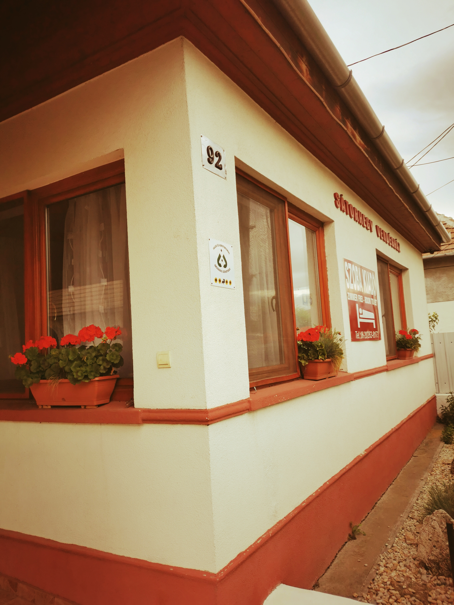
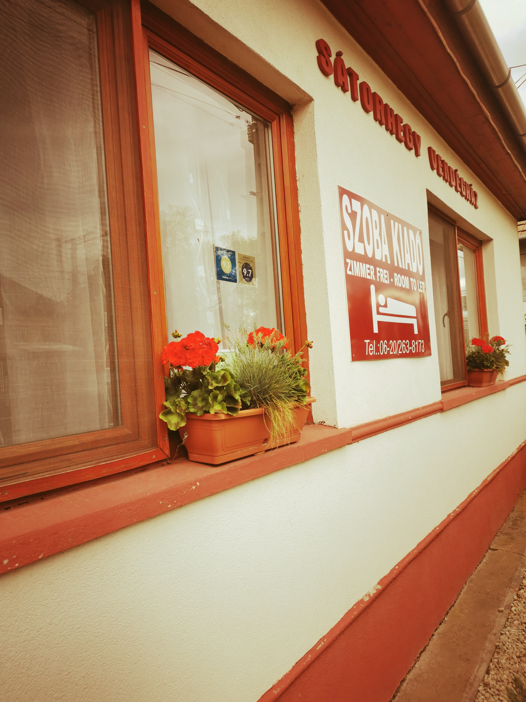
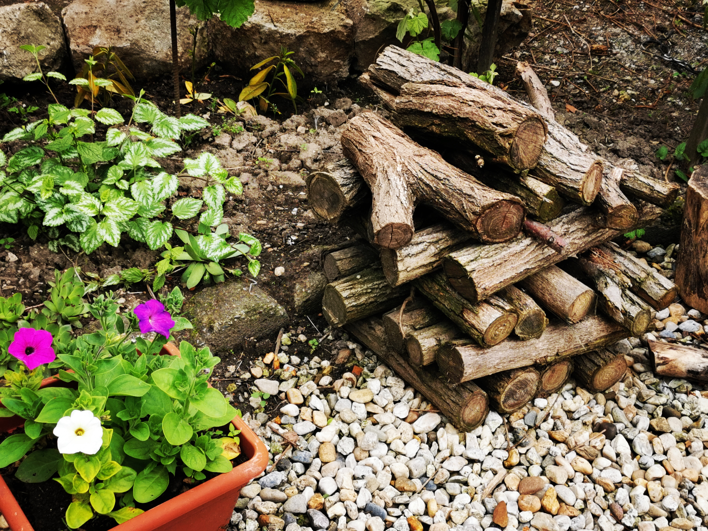

Kedves Vendégeink!
Megújult vendégházunkban egész évben szeretettel várjuk kedves vendégeinket.

A vendégház Borsod-Abaúj-Zemplén megye az Északi-középhegység
a Zemplén-hegysor nyugati oldalán, Abaúj déli csücskében Abaújszántón található. Házunkból szép
a kilátás, hiszen a Sátor-hegy lábánál fekszik így elhelyezkedése biztosítja
a kikapcsolódásra,kirándulásra,nyugodt,
pihenésre alkalmas körülményeket
,változatos látnivalókat.

A házban öt szoba és két konyha található,
minden szobához tartozik külön fürdőszoba.Az öt szobában 10 férőhely, különböző elosztásban.
A hangulatos udvaron szalonnasütésre,főzésre illetve parkolásra van lehetőség.
A város és környékbeli települései számos szórakozási lehetőséget nyújtanak
az aktív pihenés kedvelőinek.
